STEP 2 · LOCAL EXPERIMENT · BASE 77e52d4
v02: coverage without longer episodes
Generation complete. 104/189 attempted variants passed generation checks; 18/35 grid positions survived.
Rejected rear targets remain visible. This is kinematic evidence; robot success and physical RGB fidelity remain untested.
104accepted episodes18/35grid positions accepted24/40eval starts within 2 cm104independent clock/label checks
Did the grid survive?
Squares mark accepted positions; numbers count source demos. Grey crosses expose gaps.
The arena was designed from prior evaluation recordings and is development-informed, not a held-out test.
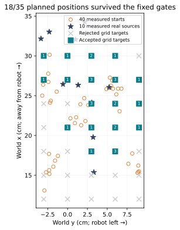
What was rejected?
Existing duration, speed, acceleration, IK, placement and clearance rules were fixed before generation. Failed variants were not slowed or clipped.
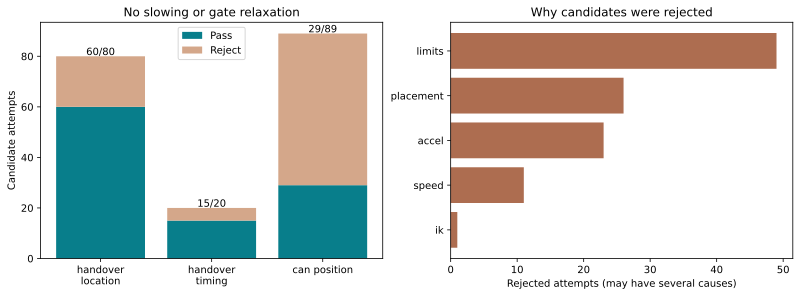
Detailed inspection found 30 rejected spatial attempts with right joint 6 action labels outside the original allowed bounds, by up to 0.97°. These labels were preserved and rejected. Other gates were not all evaluated after early rejection, so correcting this bound alone would not establish feasibility. Exact joint-limit records.
Coverage and timing
Nearest positions are approximate world-plane reconstructions. Both baselines use the same measured source centers from Step 1; v02 adds modeled target centers. Fitted source-object centers differ from those measurements by 0.39–2.10 cm, so these distances are proxies, not surveyed accuracy.
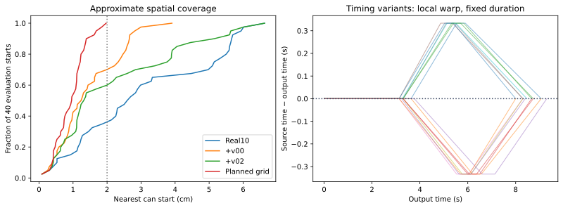
Spatial variants retain the exact source clock. Only the approved handover timing variants change local slope; all retain source frame count and fps. Overlapping points represent repeated source durations.
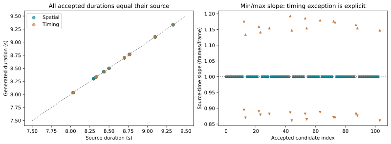
Export quality
copied: PASS; right_wrist: PASS. 104/104 episodes match on candidate IDs, state/action hashes, body fingerprints and wrist source clocks: PASS.
Right-wrist reconstruction remains an ablation: the prior Pringles fidelity test failed. The ≥30 dB export gate only measures codec agreement with generated images.
| Condition | Speed max
≤1.25× real | Acceleration max
≤1.5× real | Body codec
≥30 dB | Rendered wrist codec
≥30 dB (sample minimum) |
|---|
| copied | 1.226× | 1.408× | 43.41 dB | copied |
| right wrist | 1.226× | 1.408× | 43.41 dB | 39.19 dB |
Both conditions also pass finite values, joint limits, table clearance, start/gripper rules, exact label hashes and 50-action CPU load tests. The default TorchCodec backend additionally loads real, first-synthetic and final mixed samples. Full result table and local dataset paths · Packaging-only codec correction.
What the images show
The inspected raw examples show local warping around the can/background in the rendered wrist view, and block-like fill artifacts in a handover-location body view. Preserve these as limitations; the codec test does not measure realism.
Rows: clock-matched real body, generated body, copied right wrist, rendered right wrist. Columns follow approach → grasp → receiver close → giver open → end. These are raw rendered frames, not decoded export frames.
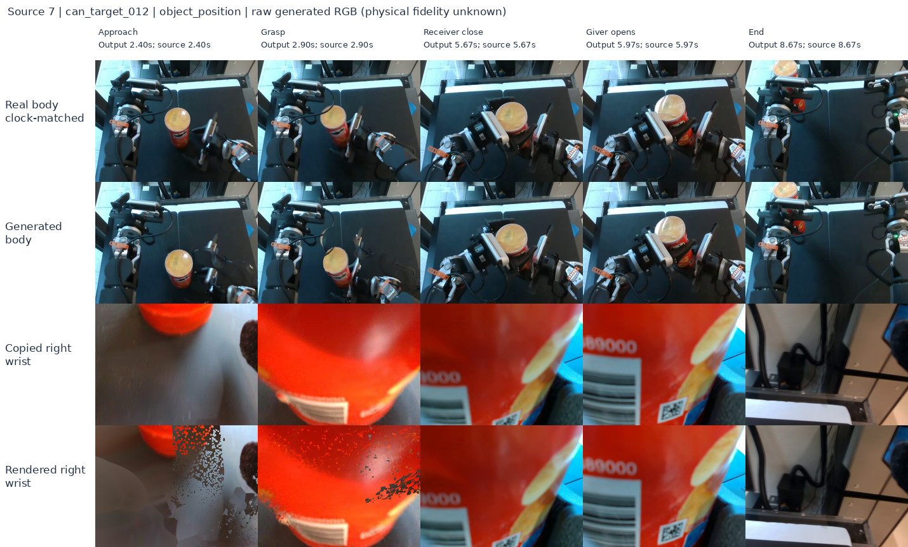
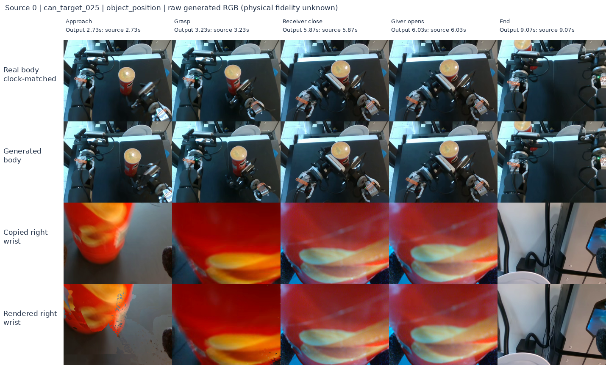
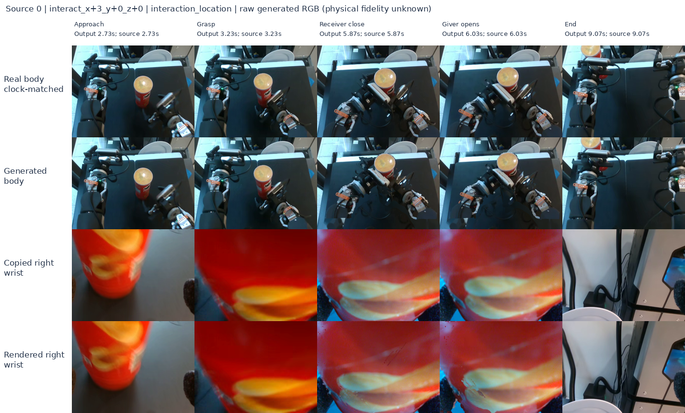
Evidence and reproduction
Frozen protocol · Exact hashes · All checks and rejection rows · Literature refresh · Step 1 diagnosis
No training, robot/CAN, physics, commits or dataset publication performed. The chart SVG/PNG files can be reused in a paper with these limitations.
Copied decoded examples
Rows: body, left wrist, right wrist. Columns: start, one-third, midpoint, two-thirds, end. Deterministic quality sample; click to inspect.
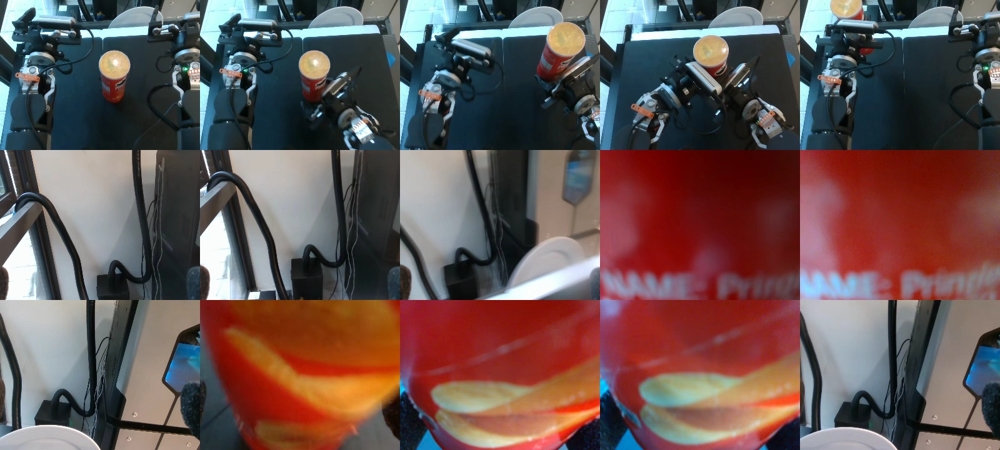
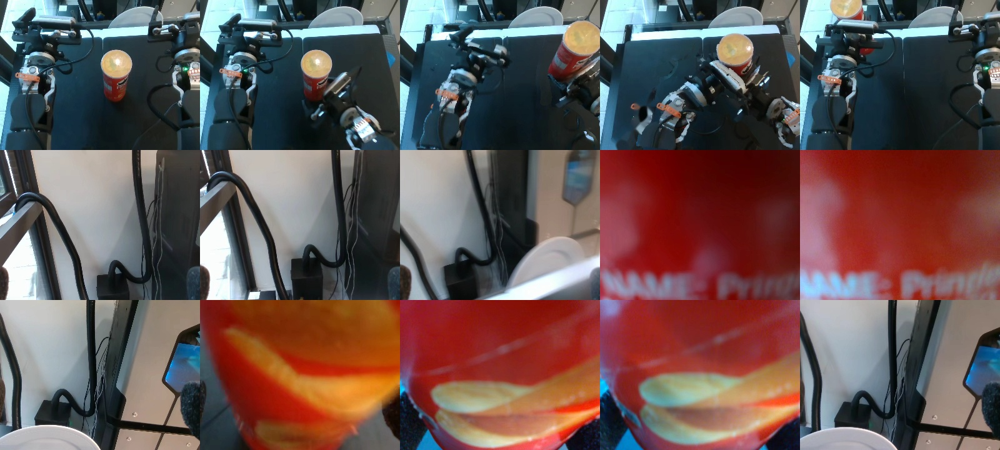
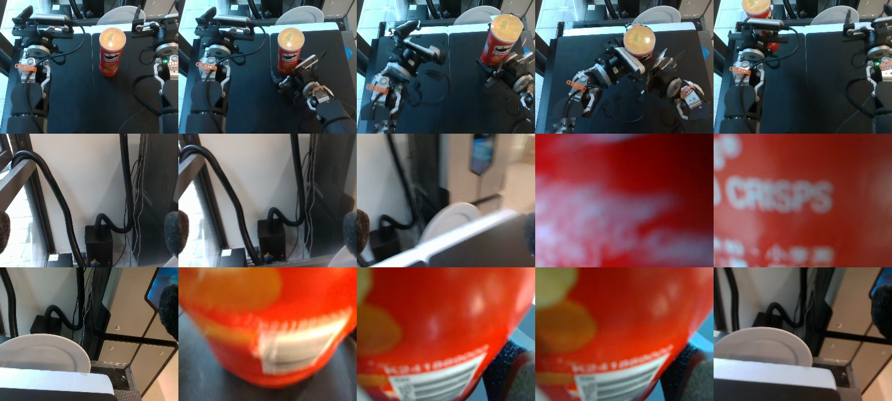
Right Wrist decoded examples
Rows: body, left wrist, right wrist. Columns: start, one-third, midpoint, two-thirds, end. Deterministic quality sample; click to inspect.
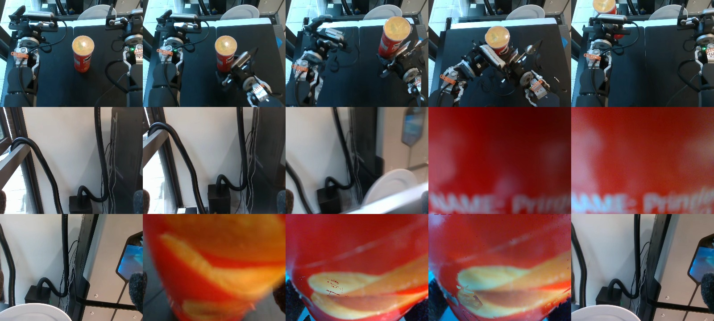
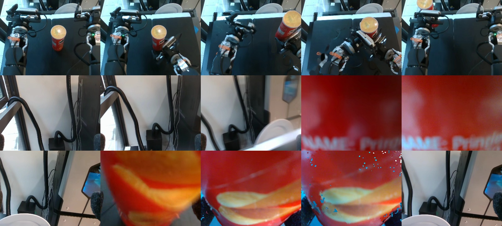